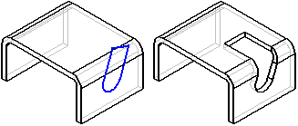

Normal Cutout command (Sheet Metal environment)
Normal Cutout command (Sheet Metal environment)
While working in ordered sheet metal, constructs a cutout in a sheet metal part such that the thickness faces of the cutout are always perpendicular to the sheet faces. This is useful when the Cutout command would create non-perpendicular faces, which can prevent you from being able to add features to those faces later.

Use Normal Cutout when an exact fit is required. In many cases, Normal Cutout lets you avoid unbending the part to model a cutout. Also, be aware that Normal Cutout creates B-Spline curves in flat patterns. If you require flat patterns without B-Spline curves, use the Unbend command to temporarily flatten the part, then use the Cutout command.